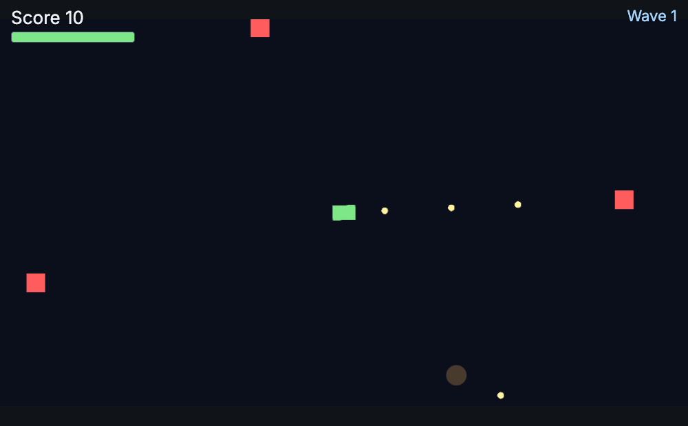
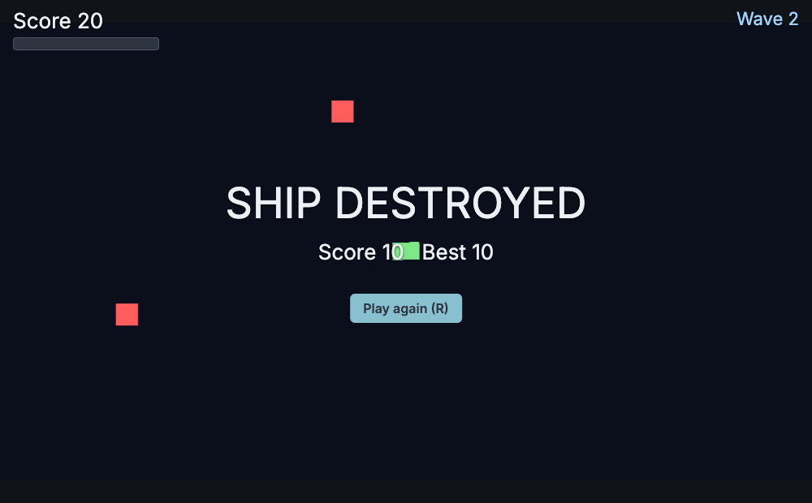

20 · A shooter: Star Shooter
Goal: a top-down space shooter: WASD to fly, the mouse to aim, hold the button to fire, survive endless waves. Project: examples/star-shooter.

Objects#
| Object | Components | Scripts |
|---|---|---|
Player (tag player) |
sprite, rigidbody (gravity 0), collider |
health.js (library) + ship.js |
| GameManager, Hud, Spawner | – | game-manager.js, hud.js, spawner.js |
| prefab Bullet | sprite, rigidbody, trigger |
bullet.js |
prefab Enemy (tag enemy) |
sprite, rigidbody, collider |
health.js + enemy.js |
| prefab Explosion | particles (burst) |
explosion.js |
Project: gravity [0,0,0], actions left right up down fire (Mouse0, Space) restart.
Aim at the mouse#
File: scripts/Ship.js (replace the Update() method of the script on the player ship)
Update() {
const p = this.input.pointer, e = this.entity.pos; // pointer.worldX / worldY are in world units
const angle = Math.atan2(p.worldY - e[1], p.worldX - e[0]) * 180 / Math.PI; // degrees, 0 = pointing right
this.entity.rot = [0, 0, angle]; // 2D rotation is the z angle in degrees
if (this.input.down('fire') && this.game.time.elapsed >= this.next) { this.next = this.game.time.elapsed + this.cooldown; this.Shoot(angle); }
}Unity: Camera.main.ScreenToWorldPoint(Input.mousePosition) + Mathf.Atan2. Here the engine already gives you world coordinates.
Bullets from an object pool#
File: scripts/Ship.js (replace Start() and add the Fire() method below it)
async Start() {
this.pool = new ObjectPool(this.scene, 'prefabs/bullet.prefab.json');
await this.pool.Warm(20); // create 20 bullets once, disabled
}
async Shoot(angle) {
const r = angle * Math.PI / 180, e = this.entity.pos;
const b = await this.pool.Get({ pos: [e[0] + Math.cos(r) * 26, e[1] + Math.sin(r) * 26, 4] }); // reuse a free bullet and enable it
b.getScript(Bullet).Launch(this.pool, r);
}File: scripts/bullet.js (new file, the whole file; attach it to the bullet prefab)
// bullet.js
Launch(pool, radians) { this.pool = pool; this.age = 0; this.alive = true; this.physics.setVelocity(this.entity, Math.cos(radians) * this.speed, Math.sin(radians) * this.speed); }
Update(dt) { if (!this.alive) return; this.age += dt; if (this.age > this.life) this.Recycle(); }
OnTriggerEnter(other) { if (this.alive && other.hasTag('enemy')) { other.emit('damage', { amount: this.damage, from: this.entity }); this.Recycle(); } }
Recycle() { if (!this.alive) return; this.alive = false; this.physics.setVelocity(this.entity, 0, 0); this.pool?.Release(this.entity); }Release only disables the object, so the next Get costs nothing; the alive flag guards against recycling twice. See Spawning for pools in general.
Health: reuse the library script, talk to it with events#
The library health.js (copied into scripts/) handles hit points on any object. You never call it directly; you send an event, and it answers with events:
other.emit('damage', { amount: 1, from: this.entity }); // "please take 1 damage"
// health.js emits on the same object: 'health' { hp, max } and 'death'File: scripts/ship.js (inside Start(), after the Health script is on the ship)
this.entity.on('death', () => this.Die()); // ship.js: game over
player.on('health', ({ hp, max }) => this.bar.set(hp / max)); // hud.js: the health barSet max, invulnTime (blink time after a hit) and destroyOnDeath per object in the Inspector: the player has 5 hp and survives, enemies have 2 hp and destroyOnDeath on. More patterns: Health and damage.
Enemies: chase, ram, explode#
File: scripts/enemy.js (new file, the whole file; attach it to the enemy prefab)
// enemy.js
Start() { this.player = this.FindWithTag('player'); this.entity.on('death', () => this.Explode()); }
FixedUpdate() { /* velocity towards the player, see the AI page */ }
OnCollisionEnter(other) { if (other.hasTag('player')) { other.emit('damage', { amount: 1 }); this.entity.emit('damage', { amount: 99 }); } }
Explode() {
GameManager.instance.AddScore(10);
this.Instantiate('prefabs/explosion.prefab.json', { pos: [this.entity.pos[0], this.entity.pos[1], 6] });
}The explosion prefab is a particles component with burst ticked (quantity 22, lifespan 550 ms, speed 240, small scale) and a script that destroys the object after 0.9 s.
Waves with a coroutine#
File: scripts/Waves.js (add this coroutine to the script on an empty Waves object and start it with this.StartCoroutine(this.Waves()) in Start())
*Waves() {
for (let wave = 1; ; wave++) {
GameManager.instance.Set('wave', wave); // the HUD listens to the 'data' event
yield new WaitForSeconds(1.5);
for (let i = 0; i < 3 + wave; i++) { this.SpawnEnemy(wave); yield new WaitForSeconds(0.45); }
yield new WaitUntil(() => this.FindGameObjectsWithTag('enemy').length === 0 || GameManager.instance.state !== 'playing');
}
}One readable loop replaces a timer-and-state-variable mess; Unity people write exactly this with IEnumerator.

death, the GameManager emits gameover and the HUD shows this screen.Ideas#
Power-ups (a pickup.js that heals), shooter enemies (spawn bullets towards the player), a boss (library ai-boss.js), screen shake on hits (Effects), sound (Audio).